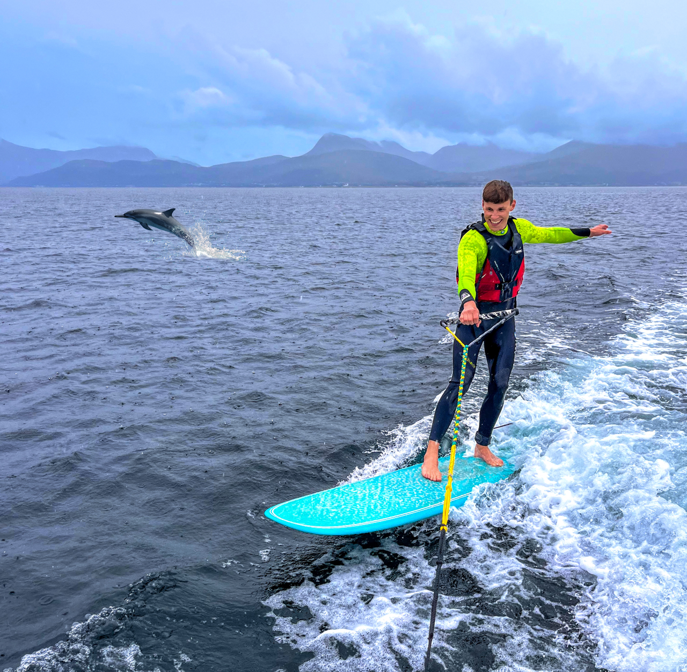
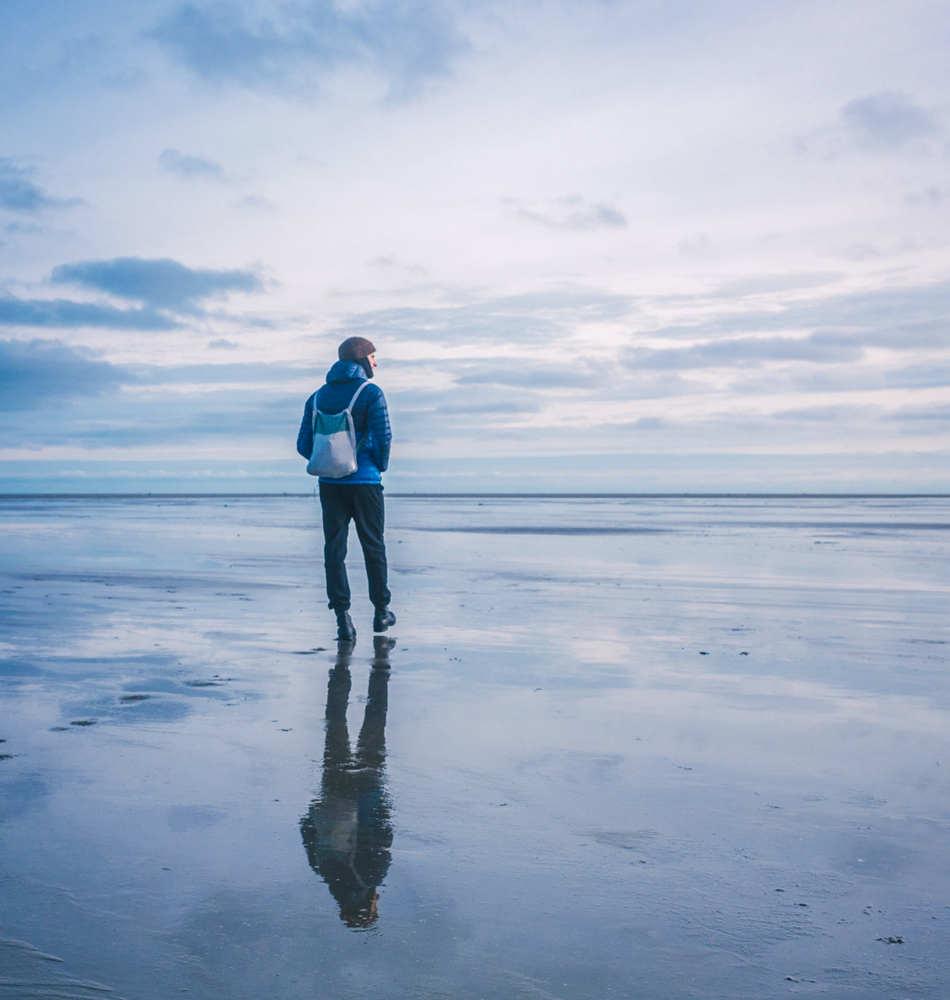
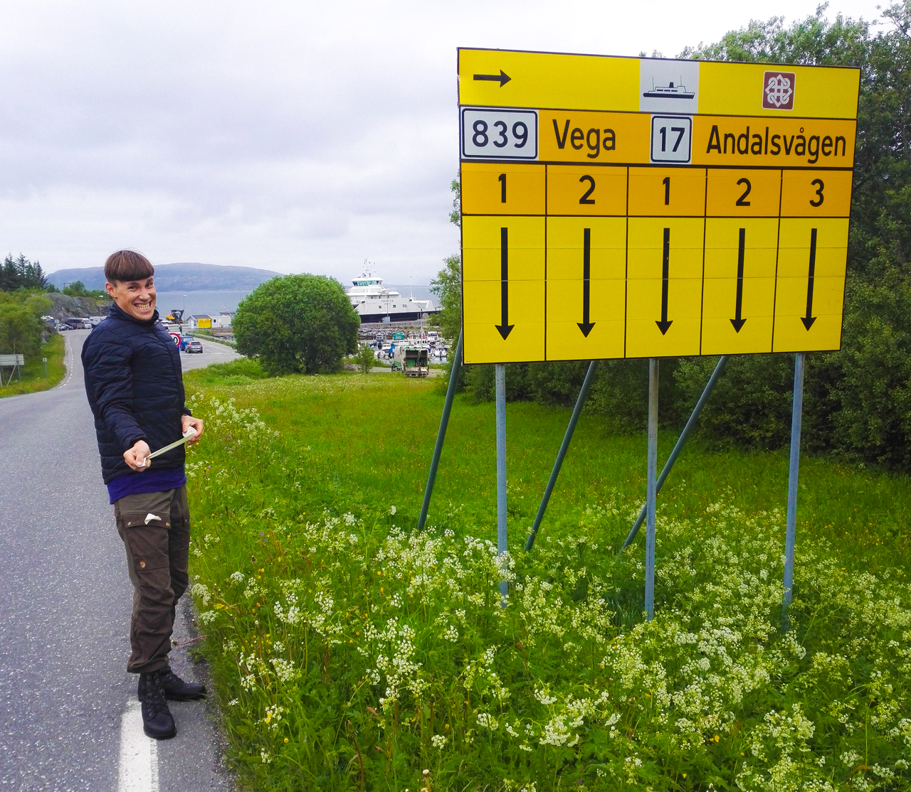
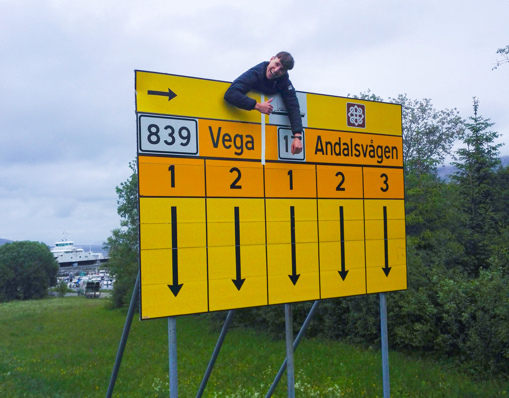
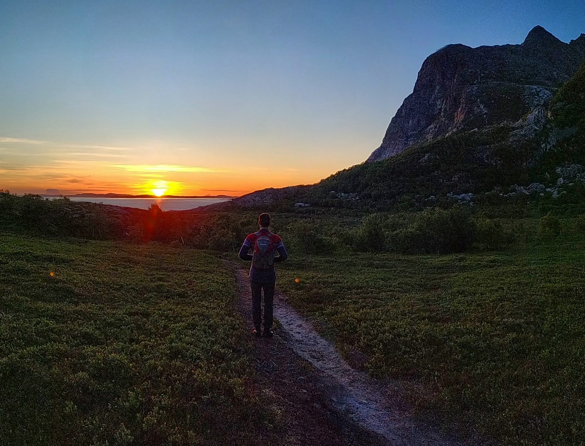
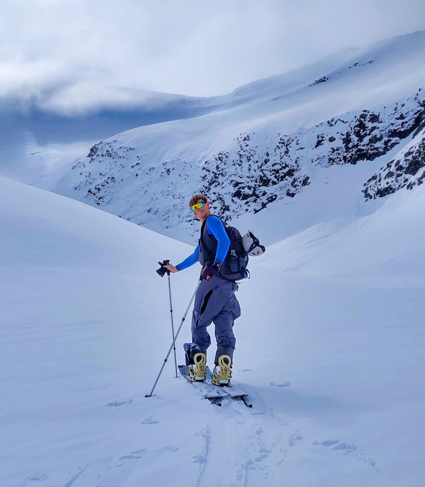
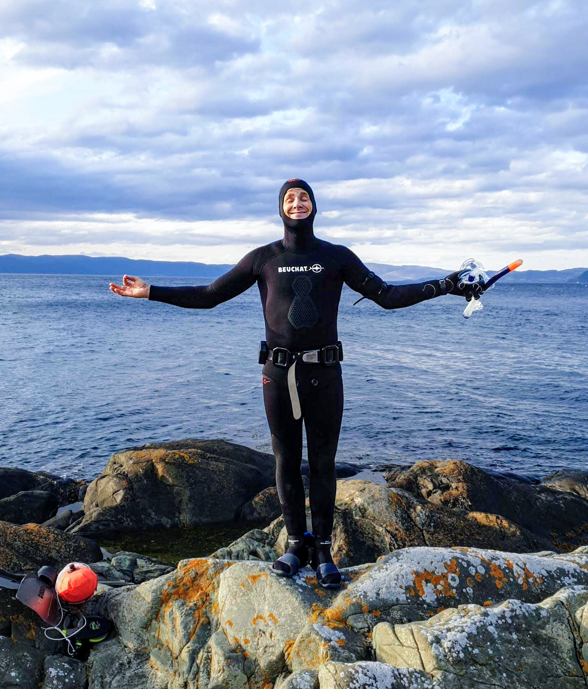
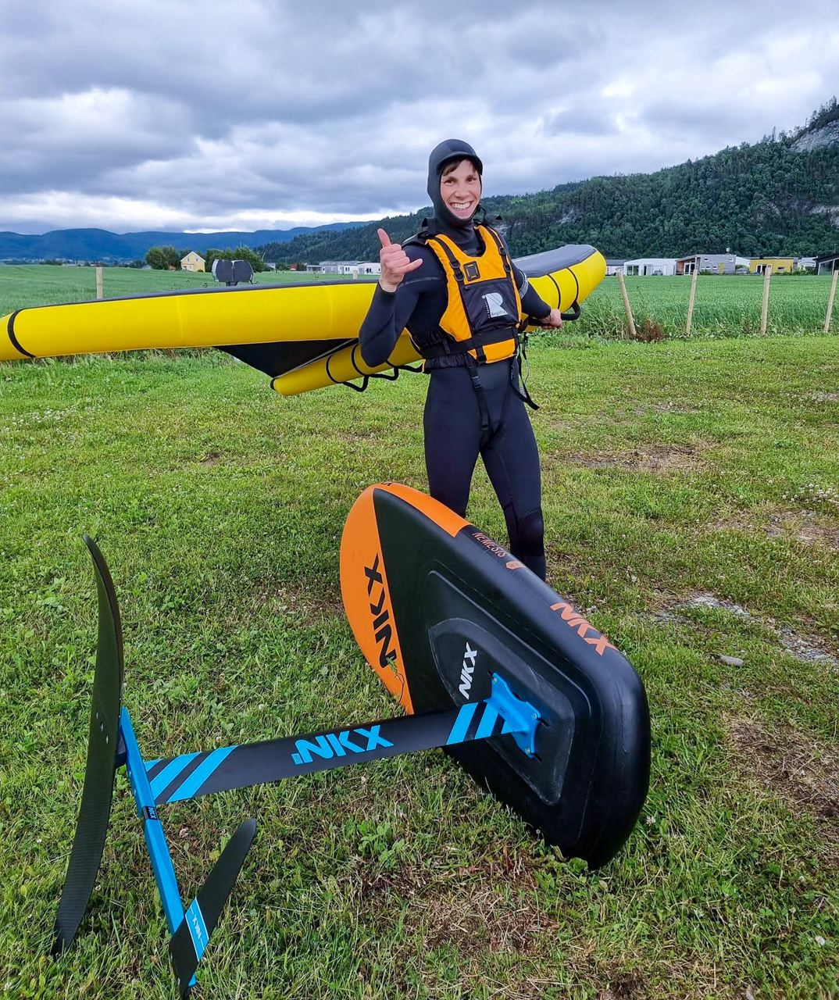
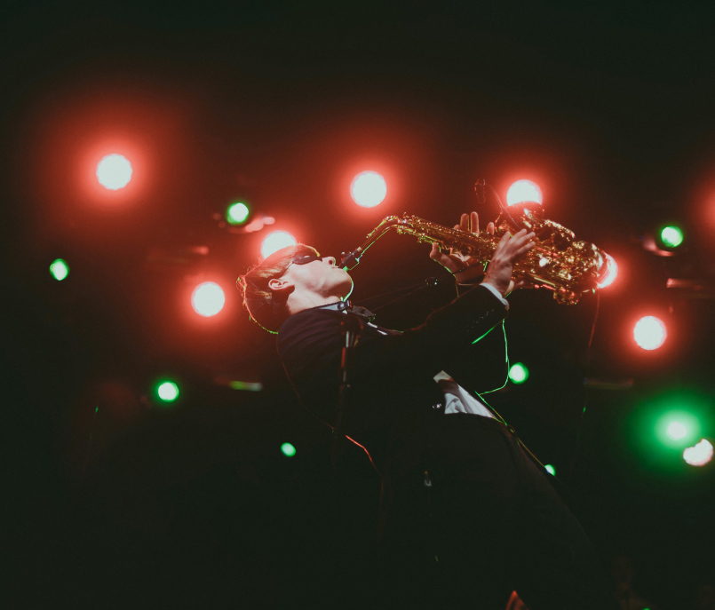

Litt om meg

Født og oppvokst på en øde øy med mor, far, fire brødre og høner i garasjen.
Det blir ikke mer moro enn man lager selv.

Men hvem er jeg som designer?
Det finnes mange definisjoner på hva design egentlig er. Den jeg kjenner meg mest igjen i (så langt) er:
"Design is the art of gradually applying constraints until only one solution remains."
Jeg har en stor forkjærlighet for "usynlig" design. Design som gjør at man intuitivt interagerer med et produkt,
uten at man trenger å tenke over det (Don't make me think - Steve Krug).
Det kan være så enkelt som en god spade, eller så vanskelig som en smooth betalingstjeneste på en nettside. Eller et skilt...
Her følger en liten historie fra et Nordnorsk eventyr som jeg delte med en studiekamerat sommeren 2019.
Den gir et bittelite innblikk i hvem jeg er som designer.

Min gode venn Tobias Wulvik og jeg var på biltur i Nordland og skulle ta ferga over til Andalsvågen fra Horn.
Etter å så vidt ha fått et glimt av fergeskiltet (se over), stilte vi oss med god tro i fergekø nummer 2 til Andalsvågen.

Det gikk ikke lang tid før herr Fergebillettør kom bort og sa: "Si mæ, lærte ikkje du å lese på barneskula?"
Etter det lille glimtet jeg hadde fått av fergeskiltet på vei ned, hadde jeg stilt oss i feil kø. Ser du hvorfor?
Det hører med til historien at dette var et daglig irritasjonsmoment for herr Fergebillettør.
Dermed bestemte vi oss for å hjelpe ham.
Min eneste anger er at vi ikke hadde svart teip.

Når jeg ikke fikser på fergeskilt holder jeg på med litt forskjellig:
Klatring/buldring

Topptur

Fridykking

Wing foiling (supernoob)
